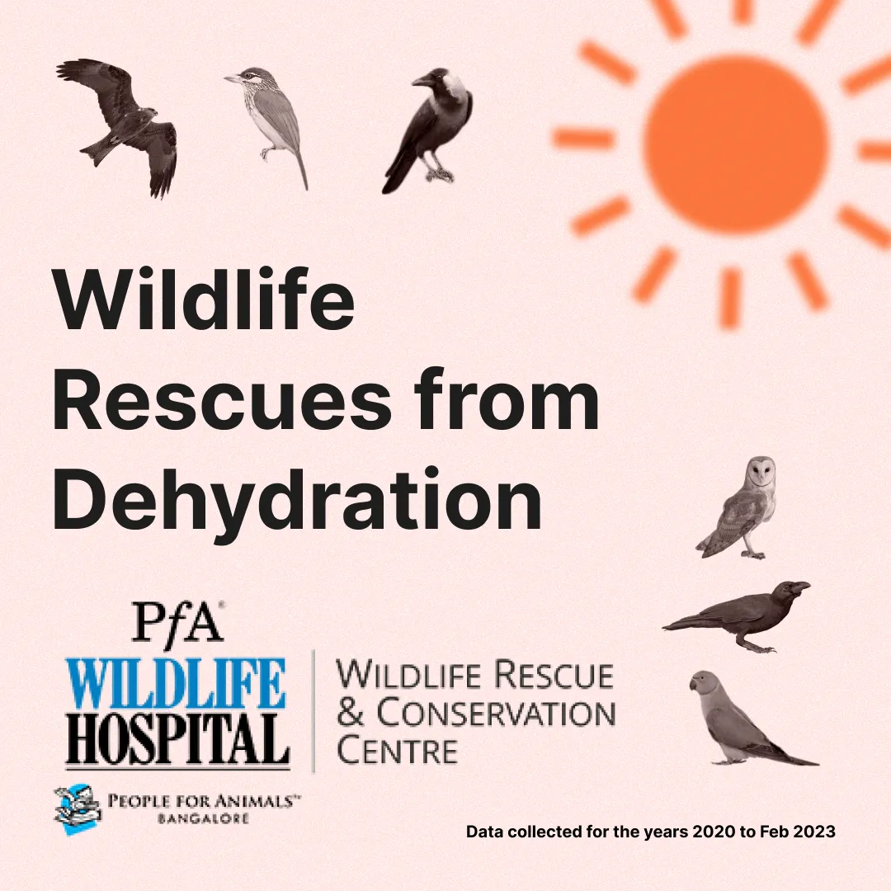
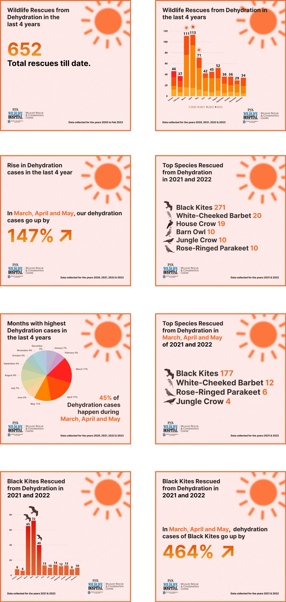

Organize
Structure rescue data so it can be explored and plotted.
Volunteer project, January 2023
For PfA Wildlife Hospital in Bengaluru, I designed topical educational social media visuals from rescue data. The goal was to raise awareness of urban wildlife by presenting data in a clear, public-facing format.
View the Instagram post

The rescue data needed to become understandable for the general public. The content had to stay educational while remaining visually accessible as a social media post.
I organized and structured the provided data in Power BI, ran exploratory data analysis, exported useful plots and numbers, planned a narrative flow, and designed the content in Figma around the topic of wildlife rescues from dehydration.
Structure rescue data so it can be explored and plotted.
Use exploratory analysis to find useful numbers and charts.
Prepare plots and data points for visual design.
Build a flow that explains the topic to the public.
Create the final social media visuals in Figma.
The project turned rescue data into visual educational content for PfA Wildlife Hospital, using Figma for the final social post design and Power BI to make the source data easier to explore.
If you like what you see and want to work together, get in touch!
prathikp.prasad@gmail.com